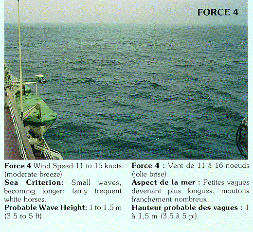

Мы зависим от дней и ночей,
От вещей, от людей, и погоды.
К. Бальмонт (1905)
Но шквальный ветер прямо в лоб
Вовсю дохнул еще студеней
И пламя слабое соскреб.
А. Штейнберг
Но добрый и милосердный Господь, желая не только защитить тех, кто почитает Его, поклоняется Ему, молится Ему, но и почтить их победой, укротил ветры, успокоив тем самым море; ведь иначе грекам сложно было бы метать огонь.
Эмир Тарса, Есман именем, снарядив флот из тридцати больших кораблей, именуемых кумвариями, напал на крепость Еврип. Между тем стратиг Эллады (это был Эниат) по царскому приказу стянул со всей Эллады большое войско, оснастил стены защитными приспособлениями, и когда увидели обитатели крепости, как корабли приближаются к стенам, и варваров, пытающихся густым дождем стрел оттеснить и прогнать со стен защитников, преисполнились гневом и мужеством, стали доблестно обороняться и, пользуясь камнеметными орудиями и стрелобаллистами,. а то и бросая камни вручную, ежедневно губили множество варваров. Но не только это. Дождавшись благоприятного ветра, они жидким огнем спалили большинство кораблей.
Продолжатель Феофана. Жизнеописания византийских царей. М. Наука. 1992 (Пер. Я.Н. Любарского)
